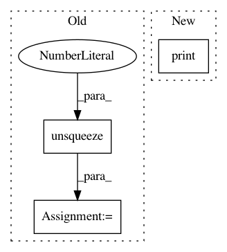

b1935c97fa1175908c579a4db06214174253f5f4,server/synthesizer.py,Synthesizer,tts,#Synthesizer#Any#Any#,173
Before Change
postnet_output, decoder_output, alignments, stop_tokens)
if self.pwgan:
vocoder_input = torch.FloatTensor(postnet_output.T).unsqueeze(0)
if self.use_cuda:
vocoder_input.cuda()
wav = self.pwgan.inference(vocoder_input, hop_size=self.ap.hop_length)
elif self.wavernn:
After Change
// compute stats
process_time = time.time() - start_time
audio_time = len(wavs) / self.tts_config.audio["sample_rate"]
print(f" > Processing time: {process_time}")
print(f" > Real-time factor: {process_time / audio_time}")
return out
In pattern: SUPERPATTERN
Frequency: 3
Non-data size: 3
Instances
Project Name: mozilla/TTS
Commit Name: b1935c97fa1175908c579a4db06214174253f5f4
Time: 2020-06-26
Author: erogol@hotmail.com
File Name: server/synthesizer.py
Class Name: Synthesizer
Method Name: tts
Project Name: lcswillems/torch-rl
Commit Name: 2143ec0e8e6a02fade949bf15d9670500ce06234
Time: 2018-04-18
Author: lcswillems@gmail.com
File Name: scripts/enjoy.py
Class Name:
Method Name:
Project Name: mozilla/TTS
Commit Name: e02fc51fde25ad2a66f630f79a5d6b8a8c9fedc7
Time: 2019-08-23
Author: egolge@mozilla.com
File Name: server/synthesizer.py
Class Name: Synthesizer
Method Name: tts